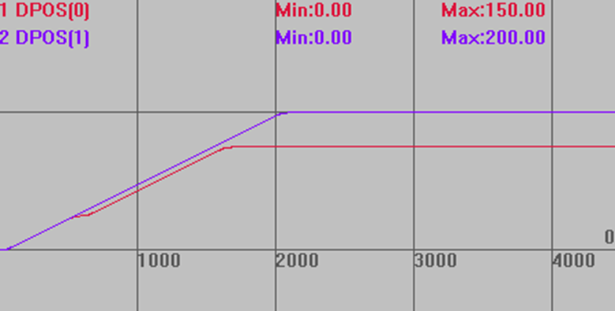
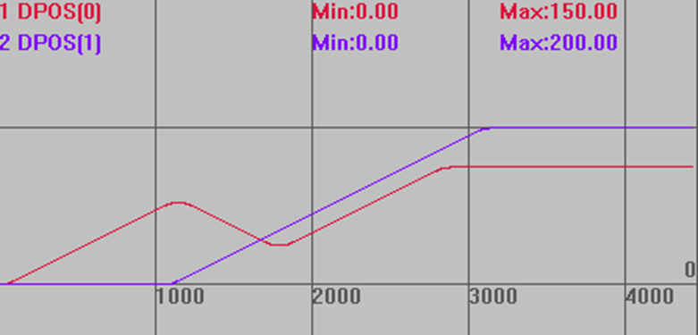

|
类型 |
多轴运动指令 |
|
描述 |
强制停止原来的运动, 接着按原来的速度与加速度定位到新目标位置。
前面没有运动时与MOVEABS效果一样，但各轴的运动是独立的，且不会进入运动缓冲。见例一。 需要WAIT 指令才能正确使用。见例二。 连续插补时使用MOVEMODIFY2会破坏速度连续性。 MOVEMODIFY2同时对多轴运动时不一定为直线插补。 MOVEMODIFY和MOVEMODIFY2指令在32位控制器上使用时不建议设置很大的运动参数，否则可能会导致速度突变的情况；如需设置较大的运动参数，可以设置齿轮比把运动参数降低，或者更换64位控制器使用。 |
|
语法 |
MOVEMODIFY2 (abspos1, abspos2,[...]) abspos1：BASE第一个轴的新目标位置 abspos2：BASE第二个轴的新目标位置
3X系列 20161209 以上固件支持. 4系列 20170509以上固件支持。 |
|
适用控制器 |
特殊固件 |
|
例子 |
例一 BASE(0,1) ATYPE=1,1 '设为脉冲轴类型 DPOS=0,0 SPEED = 100,100 ACCEL=1000,1000 '加速度设置 DECEL=1000,1000 TRIGGER MOVE(200) AXIS(0) MOVEMODIFY2(50,200) '取消MOVE(200)，强制定位新的位置(50,200) MOVE(100) AXIS(0)
运动轨迹 DPOS(0)垂直刻度200 DPOS(1)垂直刻度200 
例二 BASE(0,1) ATYPE=1,1 '设为脉冲轴类型 DPOS=0,0 SPEED = 100,100 ACCEL=1000,1000 '加速度设置 DECEL=1000,1000 TRIGGER MOVE(200) AXIS(0) WAIT UNTIL DPOS(0)>=100 '等待轴0运行过100 MOVEMODIFY2(50,200) MOVE(100) AXIS(0)
运动轨迹 竖直刻度同上  |
|
相关指令 |